CH08 compact lettered review

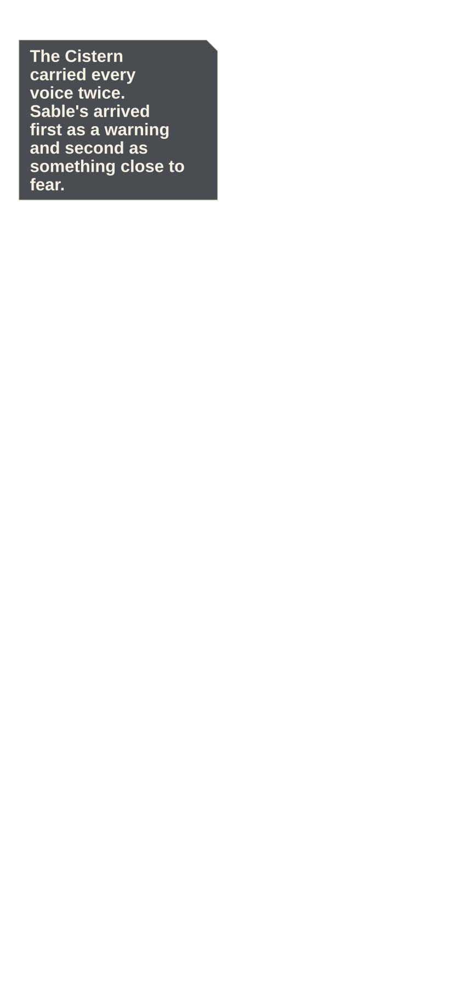
P001 · high · STORY
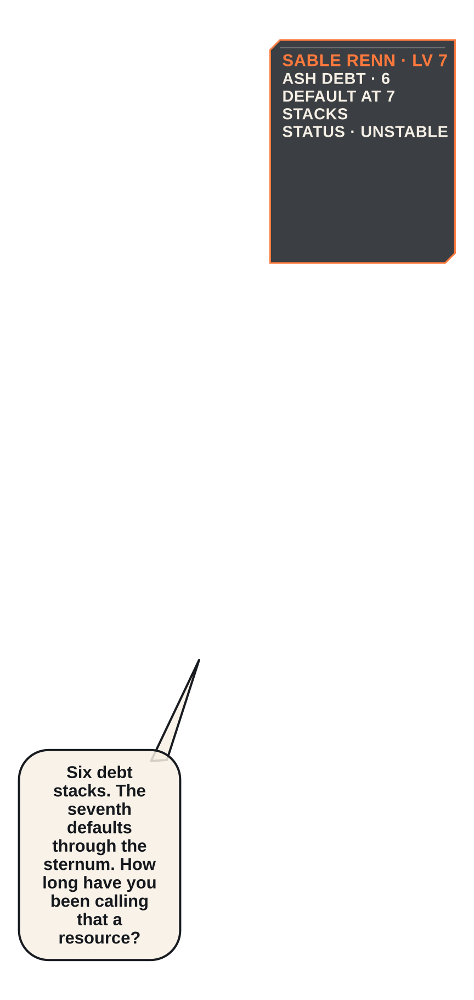
P002 · low · STORY
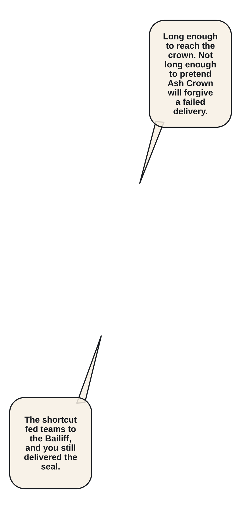
P003 · low · STORY
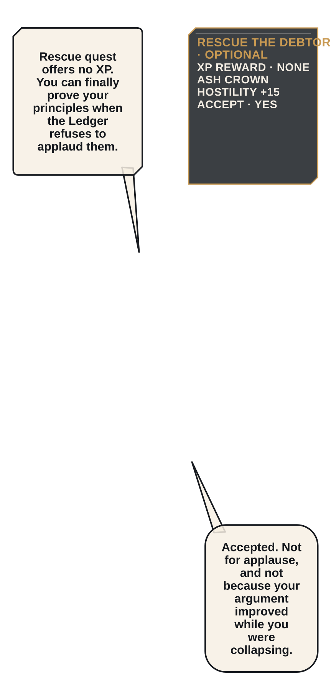
P004 · moderate · STORY P005 · low · STORY
P005 · low · STORY
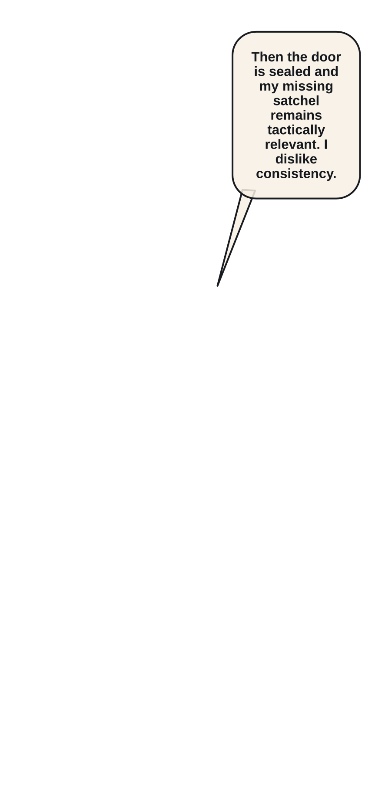
P006 · low · STORY
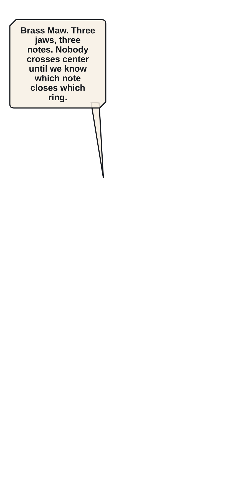
P007 · low · STORY
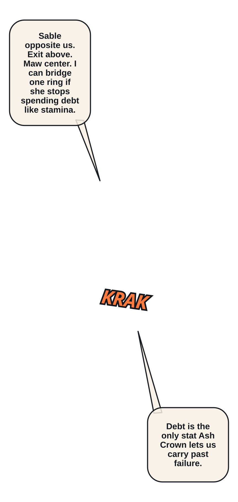
P008 · moderate · ACTION P009 · low · ACTION
P009 · low · ACTION
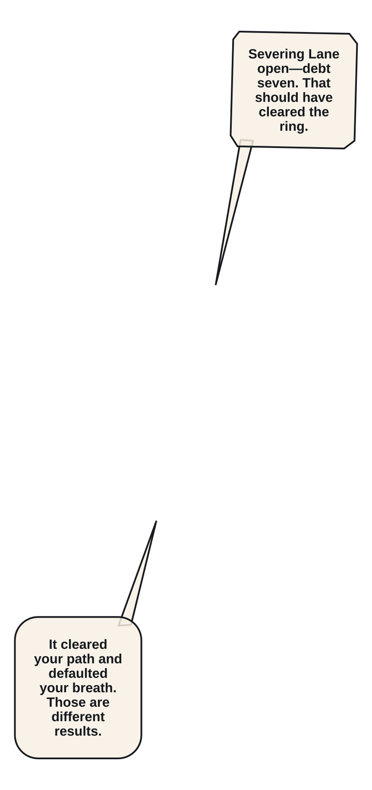
P010 · low · ACTION
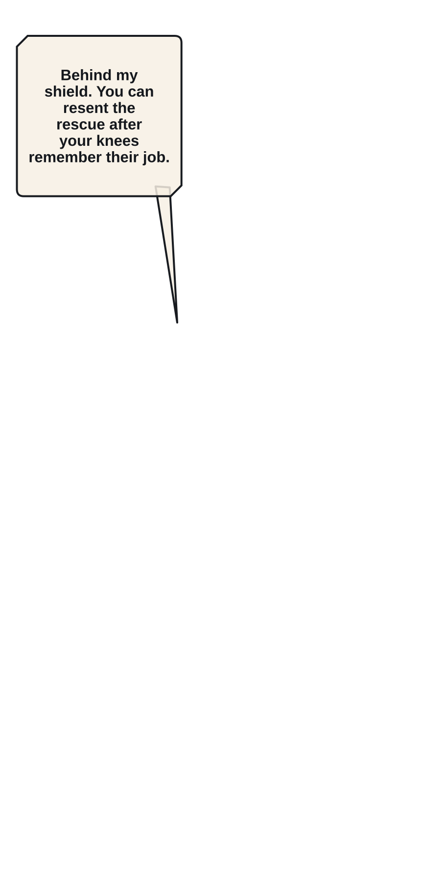
P011 · low · ACTION
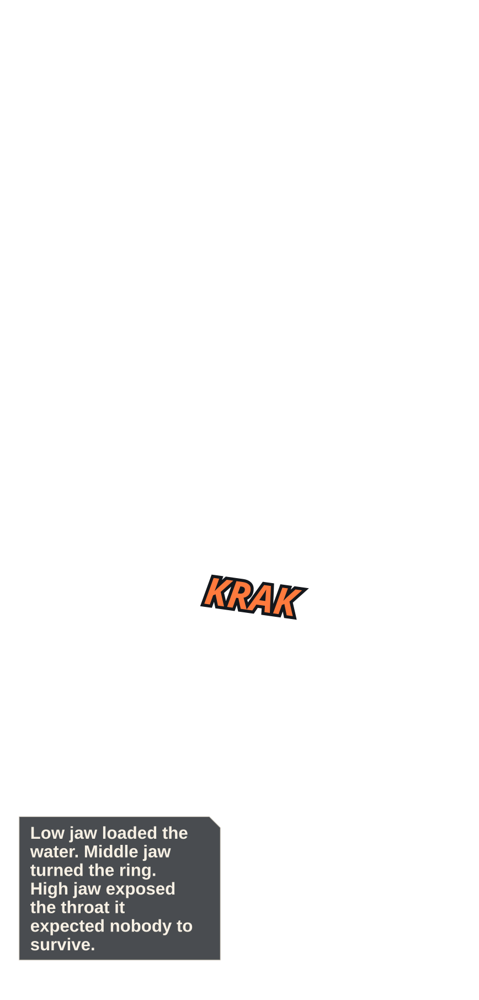
P012 · moderate · ACTION
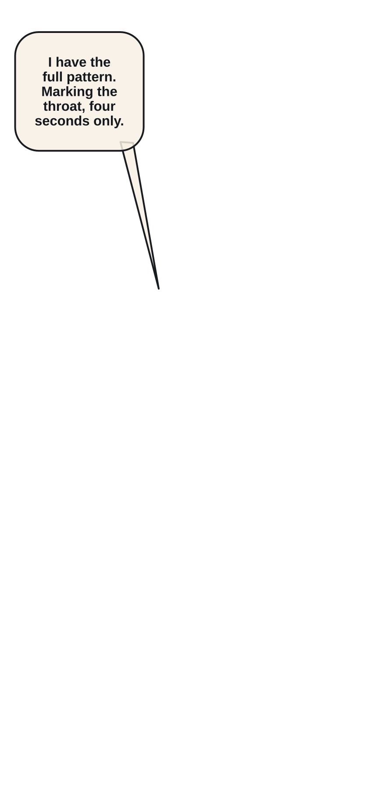
P013 · low · ACTION
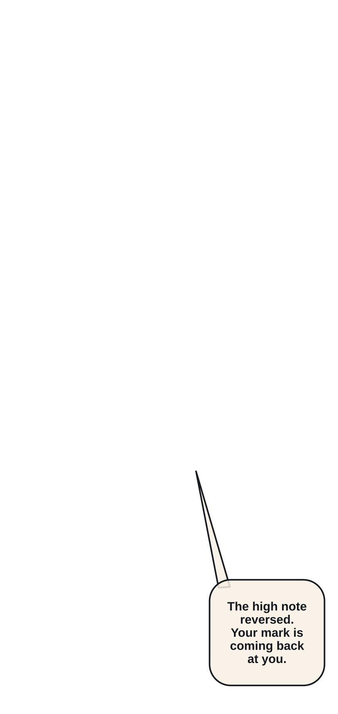
P014 · low · ACTION P015 · low · ACTION
P015 · low · ACTION
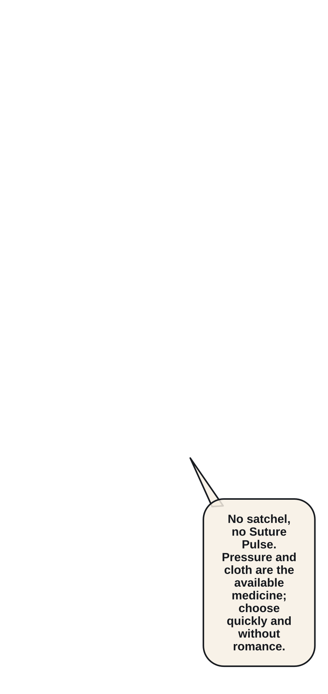
P016 · moderate · STORY
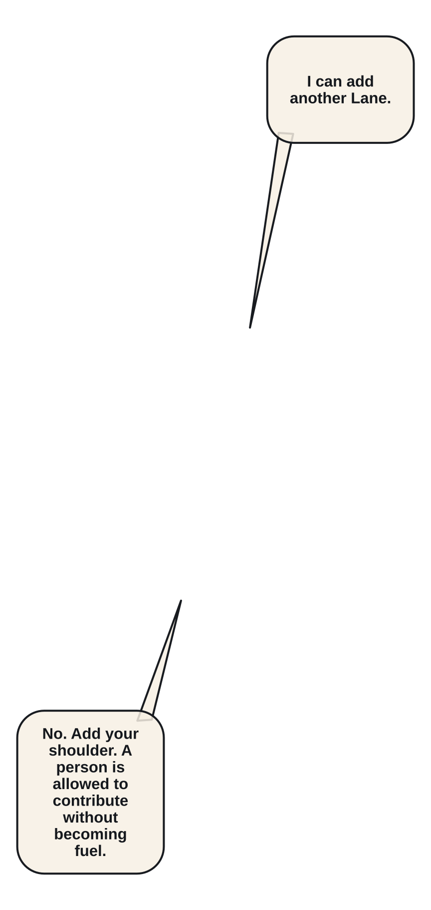
P017 · low · ACTION P018 · low · ACTION
P018 · low · ACTION
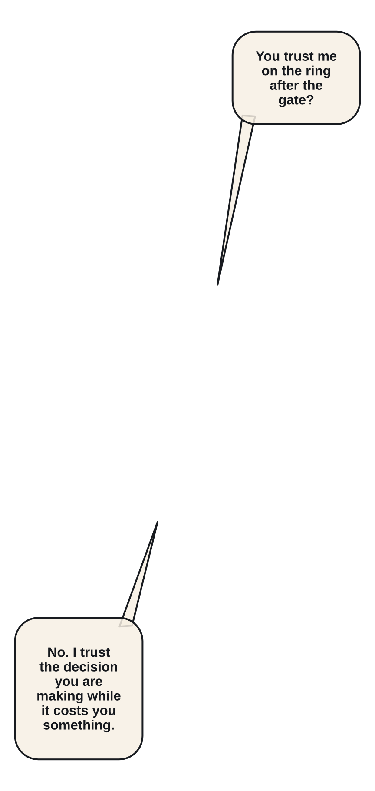
P019 · low · ACTION
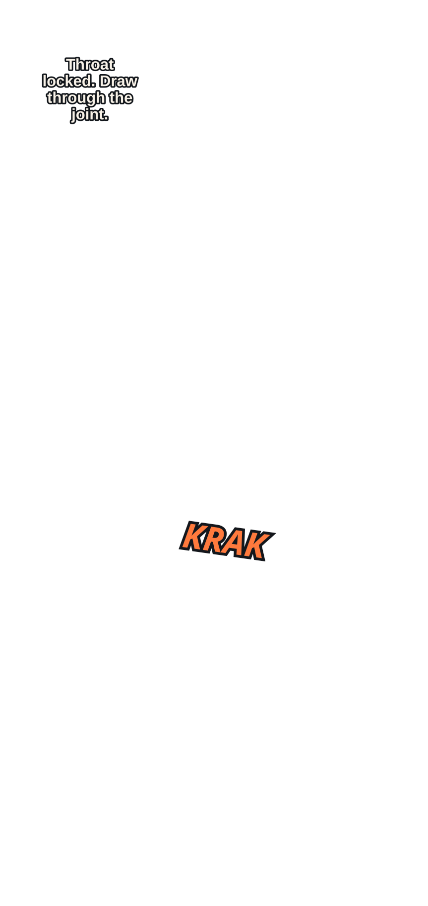
P020 · high · ACTION P021 · moderate · STORY
P021 · moderate · STORY
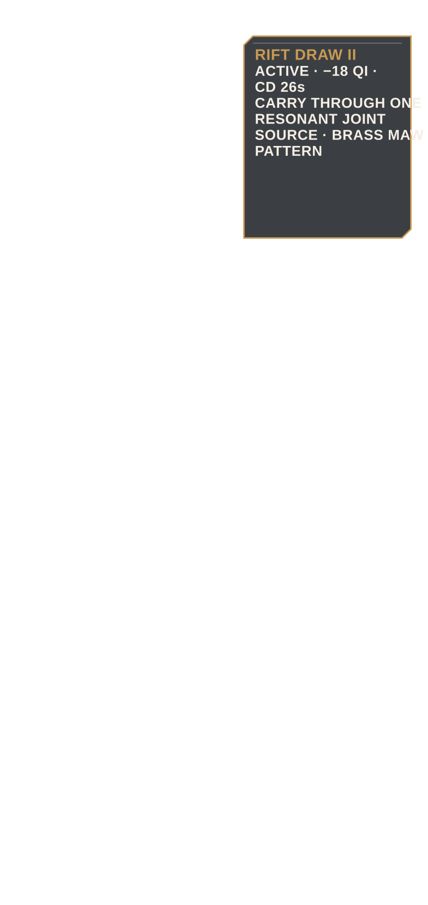
P022 · low · STORY P023 · low · STORY
P023 · low · STORY
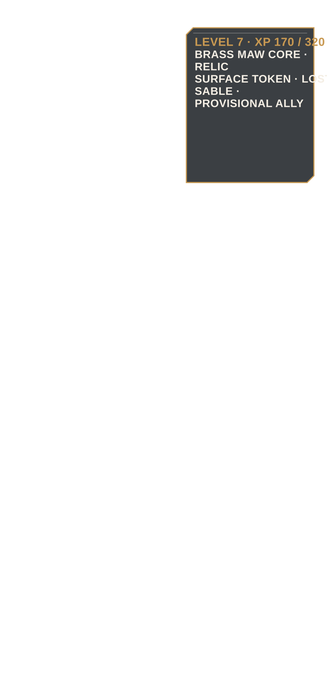
P024 · moderate · STORY